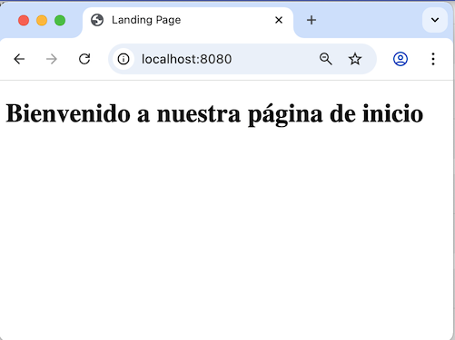
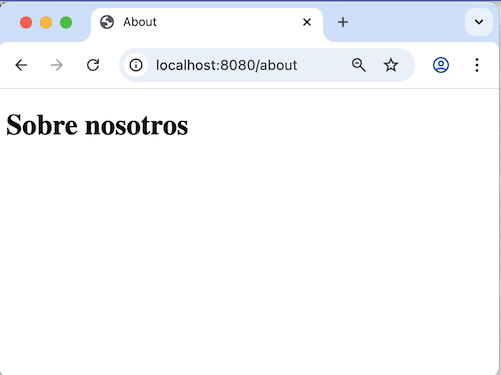

Estructura y Elementos de un Proyecto Laravel¶
Introducción al Patrón MVC en Laravel¶
Laravel sigue el patrón MVC (Modelo - Vista - Controlador), una forma de organizar el código para separar responsabilidades:
- Modelos (M): Representan los datos y la lógica de negocio. Se encuentran en
app/Models. - Vistas (V): Son las pantallas o interfaces que verá el usuario. Están en
resources/views. - Controladores (C): Gestionan la lógica de la aplicación, recibiendo las peticiones y devolviendo respuestas. Están en
app/Http/Controllers. - Rutas: Definen por dónde accede el usuario a cada funcionalidad. Se configuran en
routes/web.php.
Esquema MVC en Laravel
graph TD
Usuario -->|Solicita| Rutas
Rutas -->|Delegan| Controladores
Controladores -->|Consultan| Modelos
Modelos -->|Datos| BaseDeDatos
Controladores -->|Devuelven| VistasEsta separación facilita el mantenimiento, la escalabilidad y la organización del código.
Estructura del Proyecto Laravel¶
Dividimos la estructura en dos bloques: elementos MVC y otras carpetas importantes.
Elementos principales (MVC)¶
| Carpeta/Archivo | Descripción |
|---|---|
app/Models/ |
Modelos de la base de datos. Ej: User.php. |
resources/views/ |
Plantillas Blade que generan el HTML. |
app/Http/Controllers/ |
Lógica que maneja las peticiones HTTP. |
routes/web.php |
Archivo donde se definen las rutas para clientes web. |
Otras carpetas y archivos importantes¶
| Carpeta/Archivo | Descripción detallada |
|---|---|
app/ |
Contiene la lógica de la aplicación: controladores, modelos, middleware. |
bootstrap/ |
Carga inicial de la aplicación. Incluye app.php. |
config/ |
Archivos de configuración de todo el sistema: base de datos, correo, sesiones, etc. |
database/ |
Contiene migraciones, seeders y fábricas de datos para pruebas. |
public/ |
Carpeta pública servida por Nginx. Contiene index.php, CSS, JS públicos. |
storage/ |
Archivos generados automáticamente: logs, caché, ficheros temporales, subidas de usuarios. |
tests/ |
Tests unitarios y funcionales para automatizar comprobaciones del proyecto. |
.env |
Archivo oculto que define las variables de entorno (configuraciones sensibles). |
| vendor/ | Carpeta generada por Composer que contiene todas las dependencias del proyecto. |
artisan |
Comando CLI propio de Laravel para realizar tareas de desarrollo dentro del proyecto. |
composer.json |
Archivo que define todas las dependencias PHP del proyecto (gestor Composer). |
Dentro de app/ podemos encontrar:
| Carpeta/Archivo | Descripción |
|---|---|
Http/ |
Contiene controladores y middleware. |
Models/ |
Contiene los modelos de la base de datos. |
Console/ |
Contiene comandos personalizados de Artisan. |
Dentro de config/ podemos encontrar:
| Carpeta/Archivo | Descripción |
|---|---|
app.php |
Configuración de la aplicación. |
database.php |
Configuración de la base de datos. |
mail.php |
Configuración del correo electrónico. |
session.php |
Configuración de sesiones. |
auth.php |
Configuración de autenticación. |
Dentro de database/ podemos encontrar:
| Carpeta/Archivo | Descripción |
|---|---|
migrations/ |
Archivos que definen la estructura de las tablas de la base de datos. |
seeders/ |
Archivos que permiten poblar la base de datos con datos iniciales. |
factories/ |
Archivos que permiten crear datos de prueba para los modelos. |
Dentro de storage/ podemos encontrar:
| Carpeta/Archivo | Descripción |
|---|---|
app/ |
Archivos subidos por los usuarios. |
framework/ |
Archivos generados automáticamente por Laravel. |
logs/ |
Archivos de registro de errores y eventos. |
Dentro de tests/ podemos encontrar:
| Carpeta/Archivo | Descripción |
|---|---|
Feature/ |
Tests funcionales que comprueban el comportamiento de la aplicación. |
Unit/ |
Tests unitarios que comprueban la lógica de los modelos y controladores. |
Dentro de public/ podemos encontrar:
| Carpeta/Archivo | Descripción |
|---|---|
css/ |
Archivos CSS públicos. |
js/ |
Archivos JavaScript públicos. |
index.php |
Punto de entrada a la aplicación. |
favicon.ico |
Icono de la página web. |
robots.txt |
Archivo que indica a los motores de búsqueda qué páginas indexar. |
htaccess |
Archivo de configuración de Apache (no usado en nuestro caso). |
Instalación del Comando laravel¶
Laravel dispone de una interfaz de línea de comandos (CLI) para facilitar tareas de creación de proyectos y componentes.
Este apartado es informativo: no necesitas hacerlo
Tu proyecto ya está creado con composer create-project (apartado 2.3), que es lo que usamos en el curso. El instalador laravel solo sirve para crear proyectos nuevos y, dentro de Docker, se pierde al reconstruir el contenedor. Léelo para saber que existe.
Si quieres probarlo, se hace en la terminal de VS Code, en dos pasos:
docker compose exec php bash # 1. entras en el contenedor (el indicador cambia a root@...:/var/www/html#)
composer global require laravel/installer # 2. ya dentro, instalas el comando
Y para salir del contenedor, exit. No ejecutes laravel new dentro de /var/www/html: crearía otro proyecto dentro de tu proyecto.
Instalar el instalador de Laravel globalmente¶
Dentro del contenedor PHP, puedes instalar el instalador de Laravel si quieres crear proyectos más rápidamente:
Instalador de Laravel
Recuerda que en nuestro caso la instalación de laravel la tenemos que hacer dentro del contenedor PHP. docker compose exec php bash y luego ejecutar el siguiente comando.
Esto instalará el comando laravel de forma global.
Diferencias entre laravel y php artisan¶
-
laravel:- Se usa principalmente fuera de los proyectos.
- Sirve para crear nuevos proyectos:
Ejemplos de uso del comando laravel:
Verificar la instalación:
Si el comando anterior no funciona
Si el comando laravel no funciona, es posible que el directorio de Composer no esté en tu variable de entorno PATH. Normalmente es ~/.composer/vendor/bin o ~/.config/composer/vendor/bin dependiendo de tu sistema operativo. Asegúrate de añadirlo a tu PATH para poder usar el comando laravel globalmente.
El problema con este comando es que estamos utilizando un contenedor Docker para el desarrollo, y el comando laravel se instala dentro del contenedor PHP. Cuando reiniciamos el contenedor la instalación se pierde.
Nosotros en el curso utilizaremos composer create-project laravel/laravel:^12.0 . para crear el proyecto Laravel dentro del contenedor PHP, y no usaremos el comando laravel para crear proyectos. Sin embargo, es importante conocer la existencia de este comando, ya que es muy utilizado en entornos de desarrollo sin Docker.
La salida de este comando debería ser similar a:
Ahora cuando queramos crear un nuevo proyecto Laravel, podemos usar:
php artisan: Se usa dentro de un proyecto Laravel ya creado.
Comando php artisan
Recuerda que en nuestro caso la instalación de laravel la tenemos que hacer dentro del contenedor PHP. docker compose exec php bash y luego ejecutar el siguiente los comandos necesarios. Pero tanto el comando laravel como php artisan se ejecutan dentro del contenedor PHP.
Algunos ejemplos de uso del comando php artisan (Los iremos viendo a lo largo del curso):
php artisan make:controller NombreControlador --resource
Importante
En este curso nos centraremos principalmente en php artisan, ya que es el que se utiliza dentro de los proyectos Laravel. El comando laravel solo se usa para crear nuevos proyectos y lo utilizaremos mínimamente.
Sobre php artisan serve¶
¿Usar php artisan serve?
En nuestro entorno con Docker NO usamos php artisan serve.
Ya tenemos configurado Nginx como servidor web. php artisan serve solo se utiliza en entornos locales simples (sin Docker, sin Nginx).
Todo el acceso debe ser a través de http://localhost:8080 utilizando Nginx.
Podríamos haber prescindido de Nginx y usar php artisan serve para levantar un servidor web simple. Pero en entornos profesionales se utiliza siempre un servidor web dedicado (Nginx o Apache). Por tanto, para simular un entorno real de producción, hemos configurado Nginx.
Clase Route en Laravel¶
Por su importancia, vamos a comenzar hablando de las rutas en Laravel, ya que son el punto de entrada a nuestra aplicación. La clase Route permite definir cómo responde nuestra aplicación a las diferentes URLs. Toda aplicación de php/laravel comienza por definir sus rutas.
Hay dos grandes tipos de rutas:
- Rutas web: Se definen en
routes/web.phpy manejan peticiones de navegadores tradicionales. - Rutas API: Se definen en
routes/api.phpy están pensadas para ser usadas por clientes REST (apps móviles, servicios externos).
Rutas API
No busques en tus archivos el fichero routes/api.php. A partir de la versión 12 de laravel el fichero routes/api.php no se instala en el proyecto por defecto. En el tema correspondiente a APIs REST veremos como crear la estructura necesaria para trabajar con APIs REST.
Los métodos estáticos de la clase Route coinciden con los verbos HTTP más comunes. De esta manera podemos definir rutas que respondan a diferentes tipos de peticiones. Luego como parámetros reciben la URL y una función anónima (closure) o el nombre de un controlador y su método. De momento como no hemos visto los controladores vamos a usar closures.
Algunos métodos estáticos principales de Route:
Route::get()¶
Responde a peticiones HTTP GET (páginas web).
Este ejemplo define una ruta que responde a la URL /home y devuelve la vista home. Tenemos que tener creada la vista home.blade.php en la carpeta resources/views/. la parte del fichero .blade.php no se pone en la ruta, laravel lo añade automáticamente.
Route::post()¶
Responde a peticiones HTTP POST (envíos de formularios). En este caso vamos a responder con un simple texto. Esto lo utilizaremos al principio para ver que las rutas están funcionando correctamente. Luego ya cambiaremos el texto por una vista o por un controlador.
Route::put() y Route::delete()¶
Actualiza recursos existentes, o los elimina, utilizado en APIs REST. El esquema es similar a los anteriores.
el método Route::view()¶
Este método es importante por simplicidad. Evita tener que pasar por un controlador si solo queremos devolver una vista simple sin lógica adicional. Por tanto se utiliza para rutas que solo muestran una página estática, por ejemplo la página home, la página de about, etc. Mientras no necesitemos lógica adicional, este método es perfecto.
/
Esta ruta responde a la URL raíz del sitio web, es decir, http://localhost:8080/ en nuestro entorno Docker. Por tanto es la página principal de nuestra web. Es importante que la ruta / siempre esté definida en nuestras aplicaciones web y apunte a una página de bienvenida, inicio, landing o similar.
Poner en práctica las rutas con un ejemplo sencillo¶
Vamos a crear un par de rutas simples para ver cómo funcionan. Asociaremos a cada ruta una vista sencilla que crearemos en la carpeta resources/views/.
Vamos a crear dos vistas (páginas HTML) estáticas.
1. Crear las vistas¶
Dentro de resources/views/, crea una carpeta landing:
Dentro de landing/, crea dos archivos:
Páginas HTML5 en VSCode
Si usas Visual Studio Code, puedes crear un archivo nuevo y escribir ! y luego pulsar Tab para que se genere una plantilla básica de HTML5 automáticamente.
resources/views/landing/index.blade.php
resources/views/landing/about.blade.php
Es importante que las extensiones de los archivos sean .blade.php, ya que Laravel utiliza el motor de plantillas Blade para procesar estas vistas. Aunque luego en el enrutador no se vean las extensiones, Laravel las procesa como plantillas. Por ejemplo si tenemos el archivo:
index.blade.php, en el enrutador lo llamaremosindexy noindex.blade.php./user/index.blade.php, en el enrutador lo llamaremosuser.indexy nouser/index.blade.php.
En el último caso resaltar el uso de un . para separar la carpeta de la vista. Esto es importante porque Laravel utiliza el punto como separador de carpetas al buscar las vistas.
2. Definir las rutas¶
Edita el archivo routes/web.php y añade:
routes/web.php
A las rutas les hemos dado un nombre para poder referenciarlas más fácilmente en el futuro. Esto nos será de mucha utilidad más adelante.
Borra la ruta que trae Laravel
El web.php recién instalado ya tiene una ruta para / que muestra la página de bienvenida:
Bórrala (o sustitúyela por las nuevas). Si la dejas después de tus rutas, Laravel usa la última definida para la misma dirección y en / seguirás viendo la página de bienvenida de Laravel en lugar de la tuya. Deja también la línea use Illuminate\Support\Facades\Route; al principio del archivo.
El archivo completo queda así:
<?php
use Illuminate\Support\Facades\Route;
Route::view('/', 'landing.index')->name('index');
Route::view('/about', 'landing.about')->name('about');
Para comprobar qué rutas tiene registradas Laravel: docker compose exec php php artisan route:list.
3. Probar las rutas¶
Para acceder a las páginas, abre tu navegador y visita:
- página principal: http://localhost:8080/
- página "Sobre nosotros": http://localhost:8080/about
Felicitaciones
¡Ya has creado tu primera pequeña web usando Laravel, rutas y vistas Blade!

